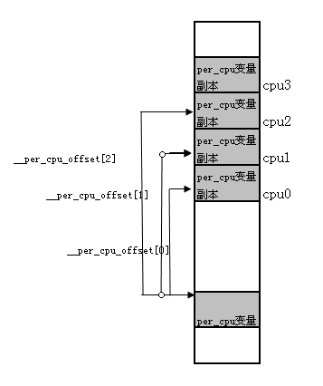

内核基础设施——per cpu变量
Contents
本节介绍了per-cpu 变量这个内核基础设施。
Linux per-cpu变量介绍
当创建一个per-CPU变量时,系统中的每个处理器都会获得它自己对这个变量的拷贝。存取per-CPU变量时几乎不需要加锁，因为每个处理器使用的都是它自己的拷贝。
per-cpu变量可以静态分配，也可以动态分配，下面就分布就这两种分配方法的原理进行简单的介绍。
静态分配per-CPU变量
静态per-CPU结构设计思路大体可以分为两个阶段：编译阶段和运行时阶段。
在编译阶段，实际上只生成了一个CPU样本。系统中所有per-CPU结构都放到了一个叫做.data..percpu的section中，在include/asm-generic/vmlinux.lds.h链接脚本中有如下内容：
/*
* Helper macros to support writing architecture specific
* linker scripts.
*
* A minimal linker scripts has following content:
* [This is a sample, architectures may have special requiriements]
*
* OUTPUT_FORMAT(...)
* OUTPUT_ARCH(...)
* ENTRY(...)
* SECTIONS
* {
* . = START;
* __init_begin = .;
* HEAD_TEXT_SECTION
* INIT_TEXT_SECTION(PAGE_SIZE)
* INIT_DATA_SECTION(...)
* PERCPU_SECTION(CACHELINE_SIZE) //请关注这里
* __init_end = .;
*
* _stext = .;
* TEXT_SECTION = 0
* _etext = .;
*
* _sdata = .;
* RO_DATA_SECTION(PAGE_SIZE)
* RW_DATA_SECTION(...)
* _edata = .;
*
* EXCEPTION_TABLE(...)
* NOTES
*
* BSS_SECTION(0, 0, 0)
* _end = .;
*
* STABS_DEBUG
* DWARF_DEBUG
*
* DISCARDS // must be the last
* }
*
* [__init_begin, __init_end] is the init section that may be freed after init
* [_stext, _etext] is the text section
* [_sdata, _edata] is the data section
*
* Some of the included output section have their own set of constants.
* Examples are: [__initramfs_start, __initramfs_end] for initramfs and
* [__nosave_begin, __nosave_end] for the nosave data
*/
/**
* PERCPU_INPUT - the percpu input sections
* @cacheline: cacheline size
*
* The core percpu section names and core symbols which do not rely
* directly upon load addresses.
*
* @cacheline is used to align subsections to avoid false cacheline
* sharing between subsections for different purposes.
*/
#define PERCPU_INPUT(cacheline) \
VMLINUX_SYMBOL(__per_cpu_start) = .; \
*(.data..percpu..first) \
. = ALIGN(PAGE_SIZE); \
VMLINUX_SYMBOL(__per_cpu_user_mapped_start) = .; \
*(.data..percpu..user_mapped..page_aligned) \
. = ALIGN(cacheline); \
*(.data..percpu..user_mapped) \
*(.data..percpu..user_mapped..shared_aligned) \
VMLINUX_SYMBOL(__per_cpu_user_mapped_end) = .; \
. = ALIGN(PAGE_SIZE); \
*(.data..percpu..page_aligned) \
. = ALIGN(cacheline); \
*(.data..percpu..readmostly) \
. = ALIGN(cacheline); \
*(.data..percpu) \
*(.data..percpu..shared_aligned) \
VMLINUX_SYMBOL(__per_cpu_end) = .;
/**
* PERCPU_SECTION - define output section for percpu area, simple version
* @cacheline: cacheline size
*
* Align to PAGE_SIZE and outputs output section for percpu area. This
* macro doesn't manipulate @vaddr or @phdr and __per_cpu_load and
* __per_cpu_start will be identical.
*
* This macro is equivalent to ALIGN(PAGE_SIZE); PERCPU_VADDR(@cacheline,,)
* except that __per_cpu_load is defined as a relative symbol against
* .data..percpu which is required for relocatable x86_32 configuration.
*/
#define PERCPU_SECTION(cacheline) \
. = ALIGN(PAGE_SIZE); \
.data..percpu : AT(ADDR(.data..percpu) - LOAD_OFFSET) { \
VMLINUX_SYMBOL(__per_cpu_load) = .; \
PERCPU_INPUT(cacheline) \
}
由这个链接脚本知道，.data..percpu Section是处于init数据段的，在系统初始化结束后将被回收。那么，系统如何维持per-CPU数据呢？这个任务在运行时完成。在系统初始化期间，start_kernel()函数中调用setup_per_cpu_areas（）函数，用于为每个cpu的per-cpu变量副本分配空间，该函数会分配 NR_CPU * （ __per_cpu_end - __per_cpu_start）大小的内存，然后将 data..percpu段中的CPU原本拷贝NR_CPU份到这块内存中。从此以后系统通过get_cpu_var访问per-CPU变量的时候就会根据自己的cpu_id找到对应的拷贝。
可见，静态per-CPU变量的locality非常好，CPU之间在Cache级都不彼此干扰。对于静态生成的per-CPU变量需要使用get_cpu_var来访问。
初始化过程可以用下图说明：

实验示例
我们可以使用 objdump 可以看到编译 kernel 时的 vmlinux 文件的 section, 例如可以通过如下命令查看.data..percpu段的大小：
~ # objdump -h /usr/lib/debug/lib/modules/`uname -r`/vmlinux | grep -A1 percpu
18 .data..percpu 00026000 0000000000000000 000000000275b000 01a00000 2**12
CONTENTS, ALLOC, LOAD, RELOC, DATA
这里可以看到.data..percpu段的大小为：00026000
这里以current_task这个每CPU变量为例，通过crash，我们可以获得其地址信息：
crash> whatis current_task
struct task_struct *current_task;
crash> p current_task
PER-CPU DATA TYPE:
struct task_struct *current_task;
PER-CPU ADDRESSES:
[0]: ffff912a5ba15c80
[1]: ffff912a5ba95c80
[2]: ffff912a5bb15c80
[3]: ffff912a5bb95c80
crash>
crash> p pcpu_base_addr
pcpu_base_addr = $1 = (void *) 0xffff912a5ba00000
crash> p __per_cpu_start
PER-CPU DATA TYPE:
char __per_cpu_start[];
PER-CPU ADDRESSES:
[0]: ffff912a5ba00000
[1]: ffff912a5ba80000
[2]: ffff912a5bb00000
[3]: ffff912a5bb80000
crash>
通过如上信息，我们可以看出，内核为每cpu变量预留的空间大小为80000，远大于00026000。
其中current_task在该段中的偏移为15c80。
API
编译期间创建一个per-CPU变量，可以使用宏DEFINE_PER_CPU
//定义一个变量
DEFINE_PER_CPU(unsigned int, irq_count) __visible = -1;
//定义一个结构体
DEFINE_PER_CPU(struct task_struct *, current_task) = ____cacheline_aligned = &init_task;
//定义一个数组
DEFINE_PER_CPU(int[3],my_percpu_array);
如果只是声明，可以使用宏DECLARE_PER_CPU
//声明一个变量
DECLARE_PER_CPU(unsigned int, irq_count) __visible = -1;
//声明一个结构体
DECLARE_PER_CPU(struct task_struct *, current_task) = ____cacheline_aligned = &init_task;
//声明一个数组
DECLARE_PER_CPU(int[3],my_percpu_array);
使用静态生成的per-CPU变量：
ptr = get_cpu_var(irq_count);
使用ptr
put_cpu_var(irq_count);
//当然，也可以使用下列宏来访问特定CPU上的per-CPU变量
per_cpu(irq_count, cpu_id);/
per-CPU变量导出，供模块使用：
EXPORT_PER_CPU_SYMBOL(irq_count)
EXPORT_PER_CPU_SYMBOL_GPL(irq_count)
动态分配per-CPU变量
动态分配per-CPU变量的场景是什么呢？虽然在内核的核心代码中也可以使用动态per-CPU变量，但是主要还是给内核模块使用的。既然是模块，那就有可能在任何时候启动使用，也可能会卸载。动态per-CPU变量就是为了满足这个需要而产生的。
我们不妨思考下，如何能把动态per-CPU的locality设计得跟静态的一样呢？ 由于不知道系统中将会有多少动态结构出现，所以不宜采用预留内存的方式，这为我们的设计带来了很大挑战。实际上，Linux也没有完全解决这个问题，但还是做了最大程度的优化。考虑到per-CPU变量的访问模式，效率应该和静态方式不相上下。下面看看linux的处理方式。
动态per-CPU结构相对于静态结构来说，设计上更直观，但效率上要低一些。每次调用alloc_percpu(type)的时候会生成一个维度为NR_CPUS的指针数组，每个指针指向一个kzalloc/kmalloc_node出来的type型对象。Linux在这里采取了一个优化手段：如果第i个cpu在线（linux支持cpu的hot-plug），那么就采用kmalloc_node来分配空间，这个空间与cpu i的亲和性很高；如果cpu i不在线，则采用通用的kzalloc分配了。
API
分配per-CPU变量:alloc_percpu
struct mem_cgroup {
...
struct mem_cgroup_stat_cpu __percpu *stat_cpu;
...
}
memcg->stat_cpu = alloc_percpu(struct mem_cgroup_stat_cpu)
回收per-CPU变量：free_percpu
free_percpu(memcg->stat_cpu)